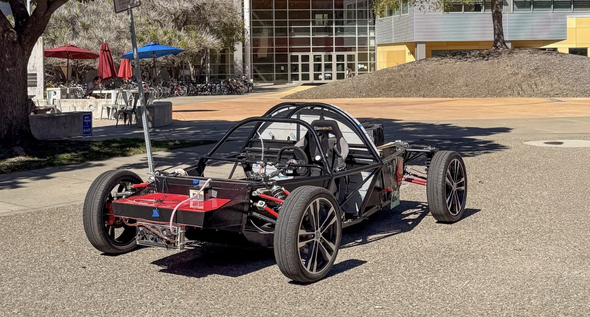
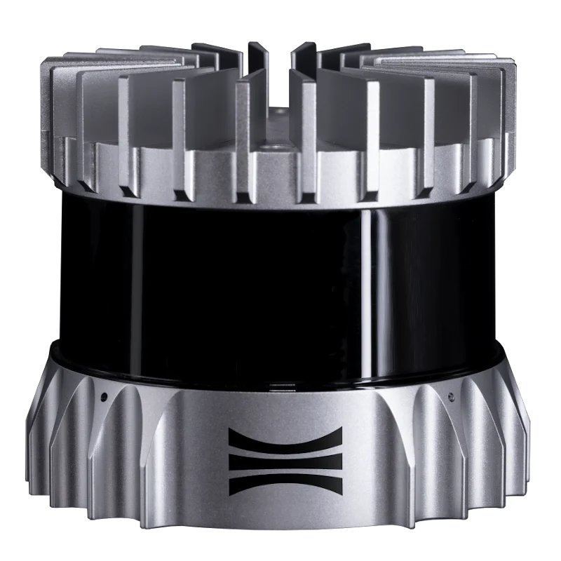
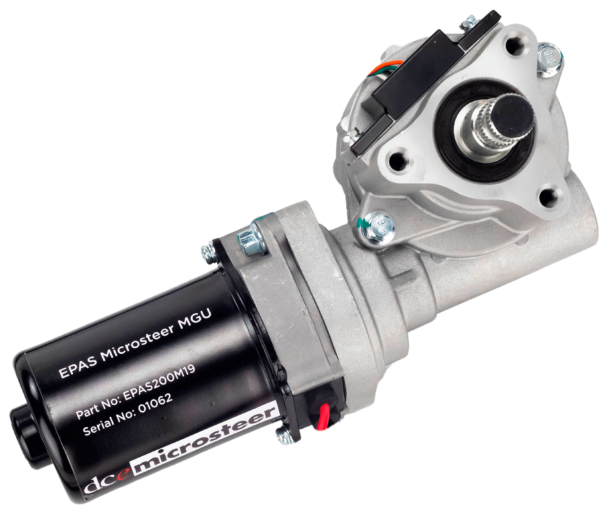

Vehicle foundation
Complete the electric-vehicle architecture and preserve safe, reliable manual operation.
PROVE LAB / CAL POLY
As Mechanical Subsystem Lead for PROVE Lab, I lead a 35-member team responsible for integrating the mechanical systems that will convert Mila into an autonomous electric vehicle.
THE TEAM
PROVE is a multidisciplinary, student-led team at Cal Poly focused on designing, developing, testing, and building autonomous vehicles. Our current vehicle is Mila, an electric platform designed to support the sensing, actuation, controls, and computing systems required for autonomous operation.
Mila's core electric-vehicle architecture is complete, which shifts the team's work toward autonomy integration. The next stage requires each subsystem to move beyond functioning independently and operate as one coordinated vehicle, with mechanical hardware, electrical systems, embedded control, perception, and software all working together.
LEARN MORE ABOUT PROVE ↗THE PLATFORM
The vehicle provides the mechanical and electrical foundation. Our current challenge is adding the sensors, autonomous steering and braking, structural hardware, and validated simulation work needed to make autonomous testing possible.

Complete the electric-vehicle architecture and preserve safe, reliable manual operation.
Add perception hardware, actuation, structural mounts, control interfaces, and supporting simulations.
Test each subsystem independently and then verify coordinated vehicle-level performance.
MY POSITION
I am responsible for giving the mechanical team a clear technical direction while keeping four scopes aligned with the vehicle-level autonomy architecture. The role combines engineering decisions, project ownership, resource management, and day-to-day mentorship.
I lead 35 mechanical team members across Structures & Fabrication, Vehicle Controls, Sensor Integration, and Vehicle Power & Simulation. I work with scope leads to establish priorities, remove blockers, and ensure each project supports the same vehicle-level objectives.
I define system-level mechanical requirements and evaluate autonomy-enabling hardware, including powered steering motors and ABS-capable electro-hydraulic braking systems. Decisions consider packaging, vehicle integration, performance, safety, and control requirements.
I oversee mechanical design, structural analysis, fabrication, sensor-hardware integration, and vehicle simulation. This requires reviewing work across SolidWorks, ANSYS, MATLAB, and Simulink while helping teams connect detailed analysis back to physical vehicle behavior.
I manage a $5,000 subsystem budget and coordinate schedules, technical requirements, resource allocation, and cross-subsystem dependencies with project managers and engineering leads. The goal is to spend deliberately and keep critical integration work moving.
I facilitate technical meetings and design reviews, assign project ownership, track progress, and provide technical guidance across concurrent projects. I focus on giving each project a clear owner, measurable next steps, and a defined connection to the full vehicle.
I help the mechanical scopes coordinate with software, electrical, controls, and project leadership so sensor locations, actuator interfaces, structural hardware, simulations, and testing plans develop as one integrated autonomy system.
MECHANICAL ORGANIZATION
Each scope owns a different part of the mechanical autonomy problem, but the work is tightly connected. Sensor placement affects structures, actuator selection affects controls and packaging, and simulation determines whether the complete vehicle can operate safely under load.
Integrates LiDAR, cameras, and related perception hardware with the vehicle while preserving useful fields of view and coordinate alignment.
Develops the steering and braking hardware that allows software commands to control the physical vehicle.
Designs high-load mounts for components exceeding 50 lbf and manufactures vehicle hardware using the manual mill, lathe, welding, and other shop processes.
Owns thermal and vehicle-dynamics simulations, CAD management, and analysis supporting the vehicle's major systems.

The Sensor Integration scope is studying where Mila's LiDAR and cameras should be mounted and how each device should be oriented relative to its own coordinate system. Placement must support the required field of view while accounting for vehicle geometry, occlusion, mounting stiffness, serviceability, and cable routing.
The goal is not simply to attach the sensors to the car. The study creates a mechanical placement strategy that gives the perception and software teams consistent, well-defined sensor positions for calibration and vehicle localization.

The Vehicle Controls scope is configuring Mila's steering and braking systems for autonomous control. The selected actuators must generate the required performance, package into the existing vehicle, and interface cleanly with the broader software and electrical architecture.
CAN bus control is a primary constraint because the steering and braking hardware must accept commands, report state, and support dependable system integration. Current evaluation includes powered steering motors and ABS-capable electro-hydraulic braking approaches.
Define the battery support, packaging constraints, and structural load path.
Evaluate static weight and cornering loads before fabrication and installation.
The Structures & Fabrication scope is developing a structural mount for the roughly 80 lbf low-voltage battery. The battery is suspended above the battery box behind the firewall, making packaging, support, and load transfer central to the design.
The mount must carry the battery's static weight and withstand the dynamic loads produced as the vehicle corners and changes direction. The project combines CAD, structural analysis, design review, and manufacturability so the final assembly can be produced and installed using the team's mill, lathe, and welding capabilities.
Model the DC motor system and establish its heat generation and operating conditions.
Evaluate the radiator, pump, and cooling loop against the predicted heat load.
Mila's current cooling system is a prototype that requires extensive validation before demanding vehicle testing. The immediate objective is to determine whether the system can prevent the DC motor from overheating under the operating conditions expected during development.
The work is divided into two phases. The team first models the motor system to understand its thermal behavior and heat load. That result then feeds a full thermodynamic model used to determine whether the radiator and pump system can reject enough heat for safe operation.
TOOLS & SYSTEMS
My role requires both technical depth and enough range to review work across design, simulation, controls, data processing, and project coordination.